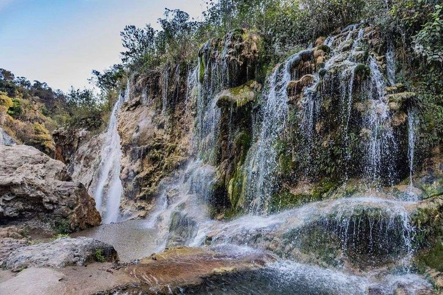
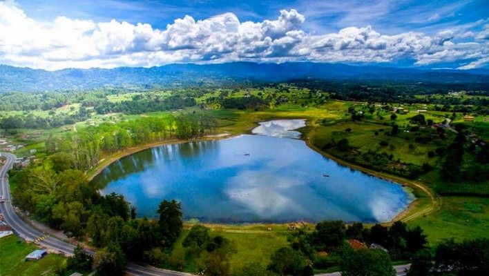
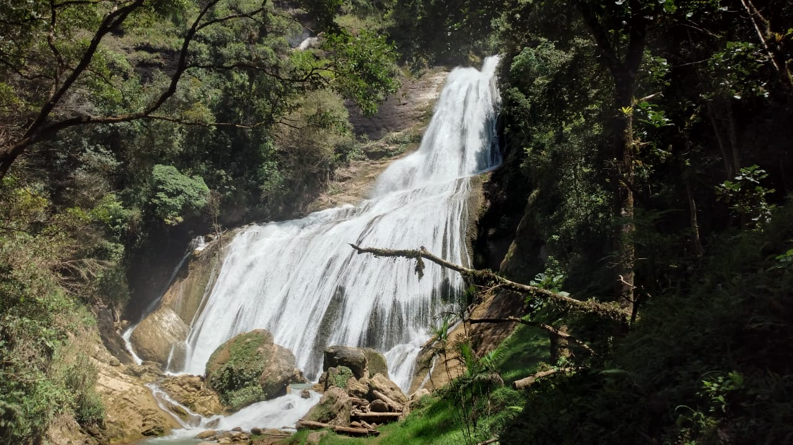
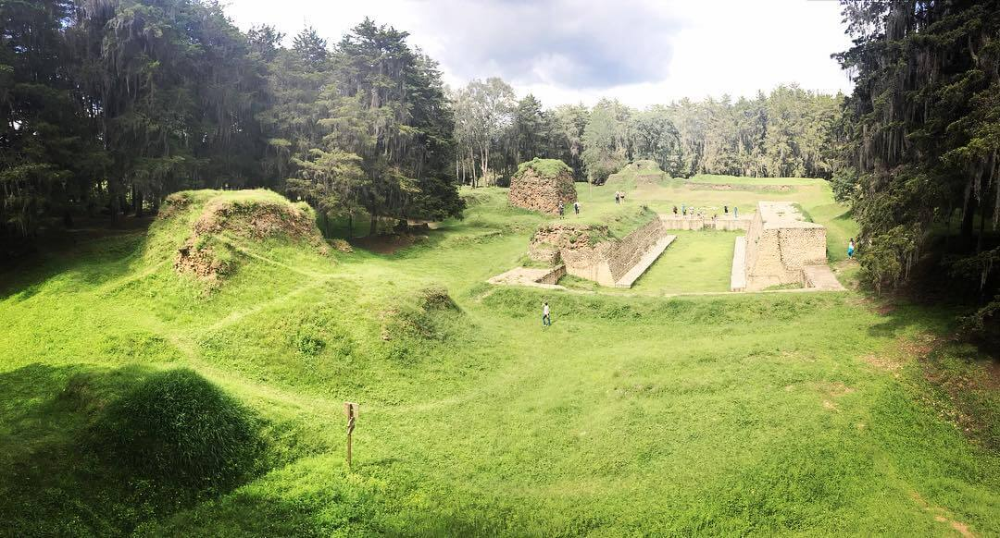
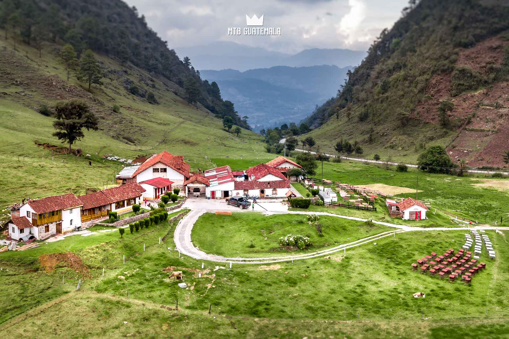

El departamento de Quiché se ubica en la región noroccidental de Guatemala, conocido por su rica herencia cultural Maya.
Santa Cruz del Quiché es la cabecera departamental y es famosa por su arquitectura colonial y sitios arqueológicos como Q'umarkaj,
antigua capital del pueblo K'iche'.
Además de su importancia histórica, Quiché ofrece paisajes montañosos impresionantes y tradiciones vivas que se reflejan en sus mercados y festividades locales.
Departamento de Quiché, Región Noroccidental de Guatemala.
1 / 5

Grutas de cunén
Este atractivo natural se localiza en Quiché, municipio de Cunén, a más de 260 kilómetros de la capital. El clima es cálido casi todo el año y las grutas tiene 35 metros de altura. Destaca su nacimiento de agua cristalina, el agua nace en las montañas y cae en forma de cascada.
2 / 5

Laguna Lemoa Santa Cruz del Quiché
La Laguna de Lemoa es un tesoro natural en el corazón de Quiché, Guatemala, que cautiva a quienes tienen la fortuna de descubrirla. Su transparencia, sus reflejos y su entorno la convierten en un lugar ideal para quienes buscan conectarse con la belleza natural de Guatemala y disfrutar de momentos inolvidables.
3 / 5

Cataratas de chichel
Las Cataratas de Chichel son un destino impresionante en el departamento de Quiché, Guatemala. Estas cascadas, rodeadas de exuberante vegetación y paisajes montañosos, ofrecen una experiencia única para los amantes de la naturaleza y la aventura.
La belleza de las cataratas, con sus aguas cristalinas que caen en cascada, crea un espectáculo visual que atrae a visitantes de todas partes.
4 / 5

Parque ecológico Qumarkaj
El Parque Ecológico Qumarkaj es un lugar de gran importancia cultural y natural en el departamento de Quiché, Guatemala. Este parque alberga las ruinas de la antigua ciudad maya de Qumarkaj, que fue la capital del pueblo K'iche' durante el período posclásico.
5 / 5

Finca Mil Amores
Finca Mil Amores conocida como la cuna del queso chancol, es un lugar que ofrece una experiencia única en el corazón de Quiché, Guatemala. Esta finca es famosa por su producción de queso chancol, un queso tradicional guatemalteco que ha ganado reconocimiento por su sabor y calidad.
La finca no solo se dedica a la producción de queso, sino que también ofrece un entorno natural impresionante, rodeado de montañas y paisajes pintorescos. Los visitantes pueden disfrutar de recorridos por la finca, aprender sobre el proceso de producción del queso.
❮
❯